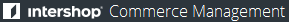

Navigationsleiste
Navigationsleiste
Dieser Abschnitt beschreibt die allgemeine Struktur der Arbeitsoberfläche und das Dialogdesign, sowie die Navigationselemente und wiederkehrende Ansichten.
Das wichtigste Navigationselement in Commerce Management ist die Navigationsleiste. Außerdem treten eine Anzahl an Navigationselementen, wie z. B. Kontext-Auswahlbox und Direktzugriffe, immer wieder in der Applikation auf.
Navigationsleiste
 Home
Home
 Ansichtswechsel
Ansichtswechsel
 Kontext-Auswahlbox
Kontext-Auswahlbox
Direktzugriff-Links
Zeitzonen-Auswahl
Modul
Abschnitt
Die Navigationsleiste, die Kontext-Auswahlbox und die Direktzugriff-Links werden in jeder Ansicht des Frontends vom Commerce Management eingeblendet.
Die Navigationsleiste ist in Abschnitte eingeteilt. Jeder Abschnitt ermöglicht den Zugang zu Werkzeugen für eine bestimmte Art von Objekten in Intershop Commerce Management. Die Werkzeugliste in einem Abschnitt kann durch Klick auf den Namen auf- bzw. zugeklappt werden.
Um ein Werkzeug zu öffnen, klicken Sie auf dessen Namen in der Navigationsleiste.
Die Kontext-Auswahlbox ist eine Dropdown-Liste, die die Management-Kontexte (oder Ebenen) anzeigt, auf die der aktuelle Benutzer zugreifen darf, d.h. die Organisation, Channels oder Applikationen. Um einen Kontext auszuwählen, klappen Sie die Liste auf und klicken Sie auf den Kontextnamen. Die Navigationsleiste verändert sich und zeigt die verfügbaren Abschnitte für den ausgewählten Kontext an.
Mit den Direktzugriff-Links kann unmittelbar auf folgende Bereiche zugegriffen werden:
Home 
Öffnet die Startseite des Commerce Management im aktuellen Fenster.
Dashboards
Öffnet ein Menü, das den Zugriff auf existierende Dashboards bzw. das Anlegen neuer Dashboards ermöglicht.
Profil 
Öffnet die Benutzerdetailansicht für den aktuellen Benutzer zum Bearbeiten von allgemeinen Angaben und Adressdaten.
Hilfe 
Öffnet die Onlinehilfe in einem neuen Fenster.
Abmelden 
Meldet den Benutzer von der aktuellen Session ab und zeigt die Anmeldeseite an.
Der Ansichtswechsel wird verwendet, um zwischen der Daten-Ansicht und der Design-Ansicht des Commerce Management zu wechseln.
Daten-Ansicht
Wechselt zur Daten-Ansicht des Commerce Management.
Design-Ansicht
Wechselt zur "Design-Ansicht", d.h. zum Bearbeitungsmodus der Channel-Storefront. In der Design-Ansicht können Content-Editoren Content-Elemente direkt in der Storefront erzeugen und verwalten. So ist es möglich, die Auswirkungen einer Aktion, z. B. der Zuordnung einer Komponente zu einem Seitenbereich, auf der entsprechenden Seite sofort zu sehen.
Die Zeitzonen-Auswahl ist eine Dropdown-Liste, die die Auswahl einer Zeitzone für die aktuelle Sitzung des Benutzers im Commerce Management ermöglicht. Folgendes ist bei der Umstellung einer Zeitzone zu beachten:
Die Standard-Zeitzone entspricht der Zeit, die auf dem Host-Server für Intershop Commerce Management eingestellt ist.
Die hier eingestellte Zeit überschreibt die Standard-Zeiteinstellung und, wenn angegeben, die channel-spezifische Zeitzoneneinstellung für die aktuelle Sitzung des Benutzers im Commerce Management. Die Zeitzonen-Einstellungen der Storefront-Applikationen werden nicht beeinflusst.
Die hier eingestellte Zeit wird mit den Einstellungen des aktuellen Benutzers gespeichert und bleibt solange gültig bis der Benutzer die Einstellung wieder bearbeitet. Dies bedeutet, dass die Einstellung nicht einfach durch Schließen der Sitzung auf Standard zurückgesetzt wird.
Mithilfe von Dashboards kann auf relevante Daten, die an die Anforderungen einer bestimmten Organisation und Benutzerrolle angepasst werden können, zentral zugegriffen werden. Ein Dashboard stellt also anpassungsfähige Anzeigen ("Widgets") dar, die bestimmte Daten anzeigen und es ermöglichen, zum entsprechenden Bereich im Commerce Management zu gelangen.
Benutzer können:
beliebig viele definierte Dashboards erstellen,
beliebig viele Widgets zu einem Dashboard hinzufügen,
die Größe von Widgets ändern,
durch einfache Positionsänderung die Widgets neu sortieren,
Widgets entfernen.
Die Benutzung der Dashboards ist im Folgenden kurz beschrieben.
Um auf ein bestehendes Dashboard zuzugreifen:
Bewegen Sie den Mauszeiger über den Direktzugriff-Link Dashboards.
Das Dashboard-Menü wird geöffnet, in dem auch eine alphabetisch sortierte Liste der bestehenden Dashboards enthalten ist.
Wählen Sie das gewünschte Dashboard aus.
Klicken Sie auf den Namen des Dashboards, das Sie öffnen möchten. Das markierte Dashboard wird geöffnet.
Wird der Direktzugriff-Link Dashboards geklickt, wird das erste Dashboard direkt geöffnet.
Wenn kein Dashboard verfügbar ist, werden Sie aufgefordert, ein neues anzulegen.
Um ein neues Dashboard anzulegen:
Bewegen Sie den Mauszeiger über den Direktzugriff-Link Dashboards.
Das Dashboard-Menü wird geöffnet.
Klicken Sie auf Dashboard anlegen.
Der Dialog Dashboard anlegen erscheint.
Geben Sie einen Namen für das neue Dashboard an.
Klicken Sie auf OK.
Das neue Dashboard wird angelegt.
Um die Aktion abzubrechen, klicken Sie auf Abbrechen, auf das Schließen-Symbol (x) oder auf Esc auf ihrer Tastatur.
Das System zeigt eine Fehlermeldung an, wenn bereits ein Dashboard mit dem eingegebenen Namen existiert und fordert Sie auf, einen anderen Namen einzugeben.
Um ein Dashboard umzubenennen:
Bewegen Sie den Mauszeiger über den Direktzugriff-Link Dashboards.
Das Dashboard-Menü wird geöffnet.
Wählen Sie das gewünschte Dashboard aus.
Klicken Sie auf den Namen des zu löschenden Dashboards. Das markierte Dashboard wird geöffnet.
Klicken Sie auf Bearbeiten | Umbenennen.
Der Dialog Dashboard umbenennen erscheint.
Geben Sie einen neuen Namen an und klicken Sie auf OK.
Das Dashboard wird umbenannt.
Um ein Dashboard zu löschen:
Bewegen Sie den Mauszeiger über den Direktzugriff-Link Dashboards.
Das Dashboard-Menü wird geöffnet.
Wählen Sie das gewünschte Dashboard aus.
Klicken Sie auf den Namen des zu löschenden Dashboards. Das markierte Dashboard wird geöffnet.
Klicken Sie auf Bearbeiten | Löschen und bestätigen Sie die Operation.
Das markierte Dashboard wird entfernt und Sie gelangen wieder auf die Startseite des Commerce Management.
Ein Widget zu einem Dashboard hinzufügen:
Bewegen Sie den Mauszeiger über den Direktzugriff-Link Dashboards.
Das Dashboard-Menü wird geöffnet.
Wählen Sie das gewünschte Dashboard aus.
Klicken Sie auf den Namen des Dashboards, zu dem Sie ein Widget hinzufügen möchten. Das markierte Dashboard wird geöffnet.
Klicken Sie auf Widget hinzufügen.
Ein Dialog mit den verfügbaren Widgets wird geöffnet.
Die verfügbaren Widgets sind in Kategorien gruppiert. Wählen Sie eine Kategorie, um die Widget-Liste auf eine bestimmte Gruppe zu beschränken.
Derzeit sind folgende Widgets verfügbar:
| Widget | Beschreibung |
|---|---|
| Channel-Hierarchie | Ermöglicht schnellen Zugriff auf Channels und Applikationen. |
| Konfigurierbare URL | Rendert die angegebene URL. |
| Bestellübersicht | Zeigt Bestellungsstatistiken. |
| Produktgenehmigungsstatus | Zeigt Produkte mit dem ausgewählten Genehmigungsstatus. |
| Produkt-Vollständigkeit | Zeigt das Ergebnis einer Produkt-Vollständigkeitsprüfung für den konfigurierten Channel und das gewählte Sortiment an. |
| Produktübersicht | Zeigt das Ergebnis einer Produktstatistik-Prüfung für den konfigurierten Channel an. |
Klicken Sie auf Hinzufügen neben dem gewünschten Widget.
Das Widget wird dem aktuellen Dashboard hinzugefügt. Der Dialog bleibt offen, damit Sie andere Widgets hinzufügen können.
Klicken Sie auf Schließen, um den Dialog Widget hinzufügen zu schließen.
Die Dashboard-Seite wird angezeigt. Die zuletzt hinzugefügten Widgets sind hervorgehoben, bis die Seite aktualisiert oder der Dialog Widget hinzufügen erneut geöffnet wird.
Je nach Typ können Widgets konfigurierbaren Content liefern. Um ein Widget zu konfigurieren:
Bewegen Sie den Mauszeiger über den Direktzugriff-Link Dashboards.
Das Dashboard-Menü wird geöffnet.
Wählen Sie das gewünschte Dashboard aus.
Klicken Sie auf den Namen des Dashboards, in dem Sie ein Widget verschieben möchten. Das markierte Dashboard wird geöffnet.
Klicken Sie auf das Symbol , das sich bei dem zu konfigurierenden Widget in der Ecke rechts oben befindet.
Das zu konfigurierende Widget wird hervorgehoben und ein Dialog zur Konfiguration angezeigt.
Bearbeiten Sie die Konfigurationswerte wie erforderlich.
Die verfügbaren Optionen sind abhängig vom Widget-Typ.
Klicken Sie auf OK.
Das Widget wird neu geladen und der Dialog geschlossen.
Ein Widget entlang eines Dashboard-Rasters verschieben:
Bewegen Sie den Mauszeiger über den Direktzugriff-Link Dashboards.
Das Dashboard-Menü wird geöffnet.
Wählen Sie das gewünschte Dashboard aus.
Klicken Sie auf den Namen des Dashboards, in dem Sie ein Widget verschieben möchten. Das markierte Dashboard wird geöffnet.
Klicken Sie die Titelzeile des Widgets und halten Sie es fest; ziehen Sie es an die gewünschte Stelle und lassen Sie es los.
Die neue Position des Widgets wird sofort gespeichert.
Widgets können entlang des vordefinierten Dashboard-Rasters verschoben werden (Zeilen und Spalten). Befindet sich bereits ein Widget in der Zielposition, dann wird dieses eine Zeile nach unten verschoben.
Um die Größe eines Widgets entlang des Dashboard-Rasters zu ändern:
Bewegen Sie den Mauszeiger über den Direktzugriff-Link Dashboards.
Das Dashboard-Menü wird geöffnet.
Wählen Sie das gewünschte Dashboard aus.
Klicken Sie auf den Namen des Dashboards, in dem Sie die Größe eines Widget ändern möchten. Das markierte Dashboard wird geöffnet.
Klicken Sie bei dem Widget die Ecke rechts unten und halten Sie sie fest; ziehen Sie die Ecke, um die Größe wie gewünscht zu ändern, und lassen Sie sie los.
Die neue Größe und Position des Widgets werden sofort gespeichert.
Die Größe eines Widgets kann innerhalb des vordefinierten Dashboard-Rasters verändert werden (Zeilen und Spalten). Befindet sich ein Widget in der Zielposition, dann wird dieses die entsprechenden Zeilen nach unten verschoben.
Um ein Widget zu löschen:
Bewegen Sie den Mauszeiger über den Direktzugriff-Link Dashboards.
Das Dashboard-Menü wird geöffnet.
Wählen Sie das gewünschte Dashboard aus.
Klicken Sie auf den Namen des Dashboards, aus dem Sie ein Widget löschen möchten. Das markierte Dashboard wird geöffnet.
Klicken Sie auf das Symbol , das sich bei dem zu löschenden Widget in der Ecke rechts oben befindet.
Das zu löschende Widget wird hervorgehoben und ein Dialog zur Bestätigung des Löschvorgangs wird angezeigt.
Klicken Sie auf OK.
Das Widget wird vom aktuellen Dashboard gelöscht.
Dieser Abschnitt beschreibt die in Commerce Management allgemein vorhandenen Ansichten.
Die Abschnitte und einige Module zeigen beim Start eine Übersichtsseite an. Übersichten listen die in diesem Abschnitt oder Modul verfügbaren Aufgaben oder Prozesse auf und ermöglichen das Ausführen der angezeigten Aufgaben bzw. das Steuern der angezeigten Prozesse.
Eine Listenansicht zeigt eine Liste von Objekten in einer Tabelle an.
Die meisten Listenansichten haben Kontrollkästchen, mit denen einzelne oder mehrere Objekte aus der Liste zum Ausführen bestimmter Aktionen ausgewählt werden können. Lange Listen werden auf mehrere Seiten aufgeteilt, wobei Schaltflächen für den Seitenwechsel die Navigation vereinfachen. Sind Objekte auf einer Seite ausgewählt, bleibt diese Auswahl beim Seitenwechsel erhalten.
Wenn ein Spaltenkopf als Link angezeigt wird, können Sie diesen verwenden, um die Liste nach diesem Merkmal zu ordnen. Mit einem Klick erhalten Sie normalerweise eine absteigende Liste und mit einem weiteren Klick eine aufsteigende Liste.
Ist der Name oder die ID eines Objekts als Verweis angezeigt, können Sie durch Anklicken eine Detailansicht für dieses Objekt öffnen.
Detailansichten zeigen mehr Informationen zu einem Objekt an. Diese Informationen können alle auf einer Seite oder gruppiert in verschiedene Register dargestellt werden.
Detailansichten von Produkten haben Schaltflächen für den Seitenwechsel, die es ermöglichen, zum nächsten oder vorhergehenden Produkt zu wechseln.
Die folgende Tabelle zeigt die allgemeinen Schaltflächen, die in Commerce Management verwendet werden.
| Name der Schaltfläche | Beschreibung |
|---|---|
| OK | Speichert die vorgenommenen Änderungen, schließt die aktuelle Ansicht und kehrt zur Listenansicht zurück. |
| Abbrechen | Verwirft die vorgenommenen Änderungen, schließt die aktuelle Ansicht und kehrt zur Listenansicht zurück. |
| Übernehmen | Speichert die vorgenommenen Änderungen und bleibt auf der aktuellen Seite. |
| Zurücksetzen | Verwirft die vorgenommenen Änderungen und stellt den zuletzt gespeicherten Zustand wieder her. |
| Neu | Startet den Prozess zum Erzeugen eines neuen Objekts. Öffnet entweder eine leere Detailansicht oder einen Assistenten zum Erzeugen des Objekts. |
| Löschen | In Listenansichten werden die ausgewählten Objekte gelöscht. In Detailansichten wird das aktuelle Objekt gelöscht und die Liste wieder angezeigt. |
| Weiter >> | Speichert die vorgenommenen Änderungen im aktuellen Schritt eines Assistenten und zeigt den nächsten Schritt an. |
| << Zurück | Speichert die vorgenommenen Änderungen im aktuellen Schritt eines Assistenten und zeigt erneut den vorhergehenden Schritt an. |
| Fertigstellen | Speichert die vorgenommenen Änderungen im letzten Schritt eines Assistenten und beendet den Assistenten. |
| << Zurück zur Liste | Schließt ohne Speichern die Detailansicht und kehrt zur Listenansicht zurück. |
| << Zurück | Schließt ohne Speichern die aktuelle Seite und kehrt zur vorhergehenden Seite zurück. |
| Auswahl bearbeiten | Startet in Listenansichten und Suchergebnissen einen Prozess, mit dem ausgewählte Objekte in Stapelprozessen bearbeitet werden. |
| Alle bearbeiten | Startet in Listenansichten und Suchergebnissen einen Prozess, mit dem alle Objekte der Liste in Stapelprozessen bearbeitet werden. |
| Suchen | Führt die Suche mit den angegebenen Parametern durch. |
| Sperrt ein Objekt für die Bearbeitung. | |
| Hebt die Sperre von Objekten auf. |
Commerce Management bietet eine einfache Suche, die Ihnen hilft, vorhandene Administrationsmodule zu finden und schnell darauf zuzugreifen. Um die Schnellnavigation zu verwenden:
Drücken Sie STRG+Leertaste.
Die Schnellnavigation wird geöffnet.
Die Schnellnavigation funktioniert auf allen Commerce Management-Seiten außer der Design-Ansicht oder wenn bereits Eingabefelder ausgewählt sind.
Tragen Sie Ihren Suchbegriff ein.
Die Trefferliste wird aktualisiert, sobald Sie schreiben.
Wählen Sie das Suchergebnis aus.
Sie können entweder
die Maus verwenden, um zum gewünschten Administrationsmodul zu navigieren und es auszuwählen, oder
die Tastatur verwenden: Nach oben/nach unten oder TAB/Umschalt+TAB zur Navigation und ENTER zur Auswahl.
Die Auswahl eines Eintrags in der Trefferliste (durch Klicken oder per ENTER-Taste) zeigt sofort die gewählte Commerce Management-Seite an.
Wenn Sie den Suchdialog schließen wollen, ohne zu einem anderen Administrationsmodul zu wechseln, können Sie entweder
ESC drücken,
auf Schließen oder das Symbol klicken oder
außerhalb der Schnellnavigation klicken.
Für die Suche nach Text-Strings gibt es eine Reihe von Optionen, die - unabhängig vom Suchkontext (Produkte, Benutzer usw.) oder dem Suchtyp (einfache oder erweiterte Suche) - systemweit unterstützt werden.
Die nachfolgende Tabelle zeigt die allgemein gültige Syntax für Suchausdrücke an.
| Suchausdruck | Beschreibung |
|---|---|
| wort | Führt eine unscharfe ("fuzzy") Wortsuche nach dem angegebenen String durch. |
| wo?t | Führt eine Suche mit einem Platzhalter durch, wobei das Fragezeichen für genau ein Zeichen steht. |
| wo* | Führt eine Suche mit einem Platzhalter durch, wobei der Stern für beliebig viele (auch null) Zeichen steht. |
| +wort | Führt eine exakte Wortsuche nach dem angegebenen String durch. |
| "wort a" | Führt eine exakte Suche nach dem angegebenen String durch. |
| -wort | Schließt den angegebenen String von der Suche aus. |
| -"wort a" | Schließt den angegebenen String von der Suche aus. |
| LCD Monitor | Kombiniert die beiden Strings, indem für die aktuelle Suche der logische Operator benutzt wird, der als Standard definiert ist (ODER für Produkt- und Benutzersuche, UND für Content-Element-Suche). |
| LCD & CRT | Wenn die Standardeinstellung des logischen Operators ODER ist, wird hierdurch eine Kombination mit logischem UND erzwungen. |
| LCD | CRT | Wenn die Standardeinstellung des logischen Operators UND ist, wird hierdurch eine Kombination mit logischem ODER erzwungen. |
| <<none>> | Führt in Attributwert-Feldern (erweiterte Suche) eine Suche nach einem leeren String durch, d.h. nach Attributen ohne Wert. |
Mit mehreren Strings in ID-Feldern führt Intershop Commerce Management immer eine exakte ODER-Suche durch.
Benutzerdefinierte Attribute sind für eine Locale nur dann verfügbar, wenn sie einen Wert haben. Die Suche nach <<none>> gibt daher alle Produkte zurück, für die das Attribut in der angegebenen Locale nicht vorhanden ist. Für die Suche in mehreren Locales können Sie die Produkt-Vollständigkeitsprüfung verwenden, siehe Produkt-Vollständigkeitsprüfung.